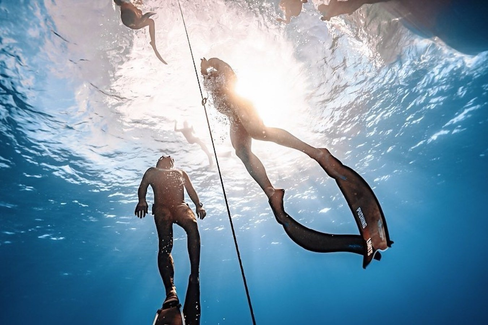

Йога-кэмп
Дахаб
«Йога у Красного моря»Дахаб · каньон · Абу-Галум · риф
Цигун на рассвете, днём риф и маска, вечером йога, пока песок ещё тёплый. Между практиками каньон, темаскаль-баня и бухта Абу-Галум. Живём в отеле с завтраками.
- Даты
- 11–21 ноября 2026
- Длительность
- 11 дней
- Ведут
- Илья Баринов
- Группа
- до 15 человек
Осталось 1 место из 15
Стоимость
- 99 000 ₽Первые 5 местпродано
- 109 000 ₽Следующие 5продано
- 119 000 ₽Последние 5сейчас
Заявка ни к чему не обязывает. Место закрепляет предоплата 40 000 ₽.
Подробнее о поездке ↗dahab-camp.ru